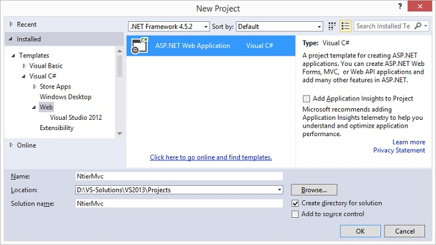
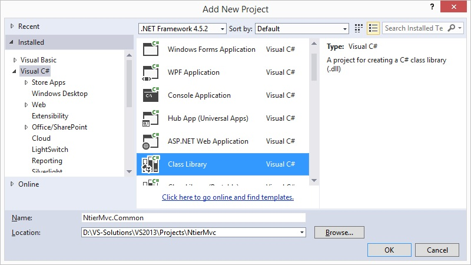
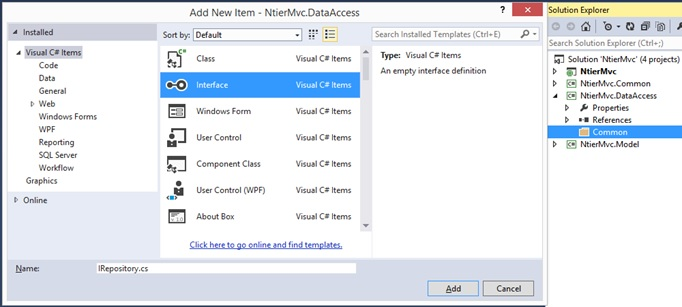
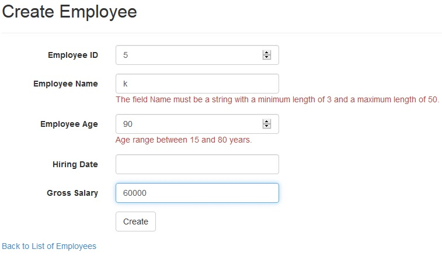

Applying N-Tier Deployment on ASP.NET MVC - A Complete Solution
Introduction
This tutorial aims to mix three main architecture styles through one complete but simple VS 2013 ASP.NET MVC web solution with C# class libraries. These architecture styles are the Model-View-Controller MVC Presentation Pattern, the N-Tiers Deployment Architecture Pattern, and the Repository Pattern in addition to many inline applied design patterns, such as Separation of Concerns SOC and Don’t Repeat Yourself DRY.
An architecture of anything is the high-level structure of that thing or the skeleton that represents that thing into unified building blocks and components from a specific point of view. When designing a software solution, we need to break it into smaller interrelated components based on a design strategy to produce the required architecture.
This tutorial attempts to build an ASP.NET MVC 5 web app in a simple way and implement the Repository Pattern with it through N-Tiers deployment.
Sample Business Case Problem Tutorial
Suppose that a fictional company called NtierMvc asks you to build a solution with the following business requirements:
- Create, Update, Delete and Retrieve Employees Data.
- The Employees input fields are Id, Name, Age, HiringDate, and GrossSalary
- Apply TAX deduction Business Rule, which states that “Employees with Age less than 30 years old shall get their salary deducted by 50%, Employees with Age less than 40 years old shall get their salary deducted by 40%, Employees with Age less than 50 years old shall get their salary deducted by 30%, Employees with Age less than 60 years old shall get their salary deducted by 20%, and Employees 60 years old and above shall get their GrossSalay without deduction”.
- When viewing Employees data, you should show the a NetSalary based on the previous Business Rule.
The Proposed Solution for the Business Case Problem
The proposed solution in this tutorial is to build simple web solution that apply
3-Tier Deployment Architecture with User Interface Layer built through ASP.NET MVC, a Business Logic Layer that applies the
TAX deduction Business Rule, and a Data Access Layer that applies
Repository Pattern for exchanging data with a SQL Server Database called
NtierMvcDB.
The proposed solution shall contain five projects and one SQL Server database as follows:
- SQL Server Database called NtierMvcDB as a data source for the project. This database shall contain a table named Employees.
- ASP.NET MVC web project named NtierMvc for the User Interface Layer.
- Class library named NtierMvc.BusinessLogic for the Business Logic Layer.
- Class library named NtierMvc.DataAccess for the Data Access Layer, the Repository.
- Class library named NtierMvc.Common as a cross-cutting helper component.
- Class library named NtierMvc.Model as a Data Contract Entity Model component.
The solution Architecture is shown in the below figure

Creating the Database of the Solution
Let us start through the data source by creating a SQL Server database named NtierMvcDB for the project. Firstly, create a Schema named HR owned by the database owner dbo. Then, create a database table named Employees and let it be as per the following table specifications.

You can create it using the following T-SQL Script
USE [master] GO CREATE DATABASE [NtierMvcDB] GO USE [NtierMvcDB] GO CREATE SCHEMA [HR] GO CREATE TABLE [HR].[Employees] ( [Id] [int] NOT NULL, [Name] [nvarchar](50) NOT NULL, [Age] [int] NOT NULL, [HiringDate] [datetime] NULL, [GrossSalary] [decimal](10, 2) NOT NULL, [ModifiedDate] [datetime] NOT NULL, CONSTRAINT [PK_Employees] PRIMARY KEY CLUSTERED ([Id] ASC) ON [PRIMARY] ) ON [PRIMARY] GO ALTER TABLE [HR].[Employees] ADD CONSTRAINT [DF_Employees_ModifiedDate] DEFAULT (GETDATE()) FOR [ModifiedDate] GO
USE [master] GO CREATE DATABASE [NtierMvcDB] GO USE [NtierMvcDB] GO CREATE SCHEMA [HR] GO CREATE TABLE [HR].[Employees] ( [Id] [int] NOT NULL, [Name] [nvarchar](50) NOT NULL, [Age] [int] NOT NULL, [HiringDate] [datetime] NULL, [GrossSalary] [decimal](10, 2) NOT NULL, [ModifiedDate] [datetime] NOT NULL, CONSTRAINT [PK_Employees] PRIMARY KEY CLUSTERED ([Id] ASC) ON [PRIMARY] ) ON [PRIMARY] GO ALTER TABLE [HR].[Employees] ADD CONSTRAINT [DF_Employees_ModifiedDate] DEFAULT (GETDATE()) FOR [ModifiedDate] GO
Creating the ASP.NET MVC User Interface Web Project
The next step is to create the UI ASP.NET MVC web app. Following are the steps to create a project using project templates available in Visual Studio. Open the Visual Studio. Click File -> New -> Project menu option.
A new Project dialog opens. From the left pane, select Templates -> Visual C# -> Web. In the middle pane, select ASP.NET Web Application and make sure you are targeting .NET Framework 4.5.2 or above. As shown in the below figure, enter the project name, NtierMvc, in the Name field and click ok to continue.

You will see the following dialog, which asks you to set the initial content for the ASP.NET project. Select the MVC Template and change the authentication to No Authentication, as shown below. Then, click OK to create an ASP.NET MVC project with predefined MVC Template contents.

Now, double click the web.config file to open it. Locate the <configuration> section and add connectionString, then locate the <appSettings> section and add custom configuration settings for this part of web.config file to be as shown below:
<configuration>
<connectionStrings>
<add name="NtierMvc.Connection"
connectionString="Data Source=YourSQLDataSource;Initial Catalog=NtierMvcDB;Integrated Security=False;user id=YourUserId;pwd=YourPassword;Connection Timeout=30;"
providerName="System.Data.SqlClient" />
</connectionStrings>
<appSettings>
<!-- The currently applied connection -->
<add key="CurrentAppConnection" value="NtierMvc.Connection" />
<add key="EnableLogging" value="True" />
<add key="LoggingPath" value="D:\LoggingData" />
<add key="webpages:Version" value="3.0.0.0"/>
<add key="webpages:Enabled" value="false"/>
<add key="ClientValidationEnabled" value="true"/>
<add key="UnobtrusiveJavaScriptEnabled" value="true"/>
</appSettings>…
</configuration>
<configuration> <connectionStrings> <add name="NtierMvc.Connection" connectionString="Data Source=YourSQLDataSource;Initial Catalog=NtierMvcDB;Integrated Security=False;user id=YourUserId;pwd=YourPassword;Connection Timeout=30;" providerName="System.Data.SqlClient" /> </connectionStrings> <appSettings> <!-- The currently applied connection --> <add key="CurrentAppConnection" value="NtierMvc.Connection" /> <add key="EnableLogging" value="True" /> <add key="LoggingPath" value="D:\LoggingData" /> <add key="webpages:Version" value="3.0.0.0"/> <add key="webpages:Enabled" value="false"/> <add key="ClientValidationEnabled" value="true"/> <add key="UnobtrusiveJavaScriptEnabled" value="true"/> </appSettings>… </configuration>
Let us leave the solution as-is for now, as we shall come back to it later.
Creating the Cross-cutting Helper Component
Now, right click on the NtierMvc solution and create a C# class library named NtierMvc.Common, as shown in the below figure.

Right click the project References and add reference to System.Configuration as shown in the below figure

Then create four classes ConfigurationHandler.cs for calling application settings from the web.config file, ExceptionHandler.cs for handling Exceptions, LoggingHandler.cs for handling Logging activities, and FileHandler.cs for handling common IO operations. In the ConfigurationHandler class, whenever we instantiate it, we shall call the used connection used and get its type from the app settings from the web.config file as shown below.
private void InitConfigurationHandler()
{
try
{
//get current connection name
var currentConnectionName = GetAppSettingsValueByKey("CurrentAppConnection");
if (string.IsNullOrEmpty(currentConnectionName))
throw new ConfigurationErrorsException(string.Format("No connection name exist in the current app/web.config."));
ConnectionStringSettings connectionName = ConfigurationManager.ConnectionStrings[currentConnectionName];
if (connectionName == null)
throw new ConfigurationErrorsException(string.Format("Failed to find connection named '{0}' in app/web.config.", currentConnectionName));
_connectionString = connectionName.ConnectionString;
_connectionProvider = connectionName.ProviderName;
if (string.IsNullOrEmpty(_connectionString) || string.IsNullOrEmpty(_connectionProvider))
throw new ConfigurationErrorsException(string.Format("The Connection String and/or the Data Provider can't be found in app/web.config."));
}
catch (Exception ex)
{
// some error occured. Bubble it to caller and encapsulate Exception object
throw new Exception("ConfigurationHandler::InitConfigurationHandler::Error occured.", ex);
}
}
/// <summary>
/// Purpose: ConfigurationHandler class constructor
/// </summary>
public ConfigurationHandler()
{
InitConfigurationHandler();
}
public string GetAppSettingsValueByKey(string sKey)
{
try
{
if (string.IsNullOrEmpty(sKey))
throw new ArgumentNullException("sKey", "The AppSettings key name can't be Null or Empty.");
if (ConfigurationManager.AppSettings[sKey] == null)
throw new ConfigurationErrorsException(string.Format("Failed to find the AppSettings Key named '{0}' in app/web.config.", sKey));
return ConfigurationManager.AppSettings[sKey].ToString();
}
catch (Exception ex)
{
//bubble error.
throw new Exception("ConfigurationHandler::GetAppSettingsValueByKey:Error occured.", ex);
}
}
private void InitConfigurationHandler() { try { //get current connection name var currentConnectionName = GetAppSettingsValueByKey("CurrentAppConnection"); if (string.IsNullOrEmpty(currentConnectionName)) throw new ConfigurationErrorsException(string.Format("No connection name exist in the current app/web.config.")); ConnectionStringSettings connectionName = ConfigurationManager.ConnectionStrings[currentConnectionName]; if (connectionName == null) throw new ConfigurationErrorsException(string.Format("Failed to find connection named '{0}' in app/web.config.", currentConnectionName)); _connectionString = connectionName.ConnectionString; _connectionProvider = connectionName.ProviderName; if (string.IsNullOrEmpty(_connectionString) || string.IsNullOrEmpty(_connectionProvider)) throw new ConfigurationErrorsException(string.Format("The Connection String and/or the Data Provider can't be found in app/web.config.")); } catch (Exception ex) { // some error occured. Bubble it to caller and encapsulate Exception object throw new Exception("ConfigurationHandler::InitConfigurationHandler::Error occured.", ex); } } /// <summary> /// Purpose: ConfigurationHandler class constructor /// </summary> public ConfigurationHandler() { InitConfigurationHandler(); } public string GetAppSettingsValueByKey(string sKey) { try { if (string.IsNullOrEmpty(sKey)) throw new ArgumentNullException("sKey", "The AppSettings key name can't be Null or Empty."); if (ConfigurationManager.AppSettings[sKey] == null) throw new ConfigurationErrorsException(string.Format("Failed to find the AppSettings Key named '{0}' in app/web.config.", sKey)); return ConfigurationManager.AppSettings[sKey].ToString(); } catch (Exception ex) { //bubble error. throw new Exception("ConfigurationHandler::GetAppSettingsValueByKey:Error occured.", ex); } }
Please refer back to the attached solution source-code sample and review the logic of this class library and its classes.
Creating the Data Contract Entity Model Component
Now, right click on the NtierMvc solution and create a C# class library named NtierMvc.Model, as shown in the below figure.

Then create a class named EmployeesEntity.cs. The class shall look like the following
using System; using System.ComponentModel.DataAnnotations; namespace NtierMvc.Model { /// <summary> /// Purpose: Data Contract Entity Model Class [EmployeesEntity] for the table [HR].[Employees]. /// </summary> public class EmployeesEntity : IDisposable { #region Class Public Methods /// <summary> /// Purpose: Implements the IDispose interface. /// </summary> public void Dispose() { GC.SuppressFinalize(this); } #endregion #region Class Property Declarations [Required(ErrorMessage = "You must enter an employee ID.")] public int Id { get; set; } [Required(ErrorMessage = "You must enter an employee Name.")] [StringLength(50, MinimumLength = 3)] public string Name { get; set; } [Required(ErrorMessage = "You must enter an employee Age.")] [Range(15, 80, ErrorMessage = "Age range between 15 and 80 years.")] public int Age { get; set; } [DisplayFormat(DataFormatString = "{0:dd/MM/yyyy}", ApplyFormatInEditMode = true)] public DateTime? HiringDate { get; set; } [Required(ErrorMessage = "You must enter an employee Gross Salary.")] public Decimal GrossSalary { get; set; } public Decimal NetSalary { get; set; } public DateTime ModifiedDate { get; set; } #endregion } }
using System; using System.ComponentModel.DataAnnotations; namespace NtierMvc.Model { /// <summary>/// Purpose: Data Contract Entity Model Class [EmployeesEntity] for the table [HR].[Employees]./// </summary>publicclass EmployeesEntity : IDisposable { #region Class Public Methods/// <summary>/// Purpose: Implements the IDispose interface./// </summary>publicvoid Dispose() { GC.SuppressFinalize(this); } #endregion #region Class Property Declarations [Required(ErrorMessage = "You must enter an employee ID.")] publicint Id { get; set; } [Required(ErrorMessage = "You must enter an employee Name.")] [StringLength(50, MinimumLength = 3)] publicstring Name { get; set; } [Required(ErrorMessage = "You must enter an employee Age.")] [Range(15, 80, ErrorMessage = "Age range between 15 and 80 years.")] publicint Age { get; set; } [DisplayFormat(DataFormatString = "{0:dd/MM/yyyy}", ApplyFormatInEditMode = true)] public DateTime? HiringDate { get; set; } [Required(ErrorMessage = "You must enter an employee Gross Salary.")] public Decimal GrossSalary { get; set; } public Decimal NetSalary { get; set; } public DateTime ModifiedDate { get; set; } #endregion } }
As you can see, all of the EmployeesEntity class are mapped to the [HR].[Employees] table except for the NetSalary property, which is of Nullable type and its value shall be used to view data to client users and is not needed in inserting data to the database as I shall explain this point later. As you can see, we have put some attributes to each property for further validation operation. We shall discuss the use of the DataAnnotations attributes later on when we build the ASP.NET MVC web app.
Creating the Data Access Repository Component
This class library shall act as an ORM data mapper between the SQL Server data source and our solution. Now, right click on the NtierMvc solution and create a C# class library named NtierMvc.DataAccess, as shown in the below figure.

Then, add reference to the two class libraries, NtierMvc.Model and NtierMvc.Common as shown in the below figure.

Then, add a new folder named Common to this class library. Right click on the Common folder and click on Add New Item, then add an interface and named IRepository as shown in the following dialog.

Its source code should look like the following
using System; using System.Collections.Generic; using System.Linq; namespace NtierMvc.DataAccess.Common { /// <summary> /// Purpose: Interface contains common methods implemented by all repository classes. /// </summary> public interface IRepository<TEntity> where TEntity : class { #region Methods bool Insert(TEntity entity); bool Update(TEntity entity); bool DeleteById(int id); TEntity SelectById(int id); List<TEntity> SelectAll(); #endregion } }
using System; using System.Collections.Generic; using System.Linq; namespace NtierMvc.DataAccess.Common { /// <summary>/// Purpose: Interface contains common methods implemented by all repository classes./// </summary>publicinterface IRepository<TEntity> where TEntity : class { #region Methodsbool Insert(TEntity entity); bool Update(TEntity entity); bool DeleteById(int id); TEntity SelectById(int id); List<TEntity> SelectAll(); #endregion } }
There shall be another two components inside the Common folder, the DataHandler.cs class, and Enumerators.cs code file. These items are very handy for the NtierMvc.DataAccess class library.
Now, Right click on the NtierMvc.DataAccess class library project and click on Add New Item, then add a class named EmployeesRepository as shown in the following dialog and click the Add button.

Now, reference the namespaces NtierMvc.Common, NtierMvc.DataAccess.Common, and NtierMvc.Model in the using section of the EmployeesRepository class to be as shown below
using System; using System.Collections.Generic; using System.Data; using System.Data.Common; using System.Linq; using System.Text; using System.Threading.Tasks; using NtierMvc.Common; using NtierMvc.DataAccess.Common; using NtierMvc.Model;
using System; using System.Collections.Generic; using System.Data; using System.Data.Common; using System.Linq; using System.Text; using System.Threading.Tasks; using NtierMvc.Common; using NtierMvc.DataAccess.Common; using NtierMvc.Model;
Then, let the EmployeesRepository class implements the interfaces IDisposable and IRepository for the EmployeesEntity, class as shown in the below code
/// <summary>
/// Purpose: Data Access Repository Class [EmployeesRepository] for the table [HR].[Employees].
/// </summary>
public class EmployeesRepository : IRepository<EmployeesEntity>, IDisposable
{
#region Private Declarations
private LoggingHandler _loggingHandler;
private DataHandler _dataHandler;
private ConfigurationHandler _configurationHandler;
private DbProviderFactory _dbProviderFactory;
private string _connectionString;
private string _connectionProvider;
private int _errorCode, _rowsAffected;
private bool _bDisposed;
#endregion
#region Class Methods
public bool Insert(EmployeesEntity entity)
{
throw new NotImplementedException();
}
public bool Update(EmployeesEntity entity)
{
throw new NotImplementedException();
}
public bool DeleteById(int id)
{
throw new NotImplementedException();
}
public EmployeesEntity SelectById(int id)
{
throw new NotImplementedException();
}
public List<EmployeesEntity> SelectAll()
{
throw new NotImplementedException();
}
public EmployeesRepository()
{
//Repository Initializations
_configurationHandler = new ConfigurationHandler();
_loggingHandler = new LoggingHandler();
_dataHandler = new DataHandler();
_connectionString = _configurationHandler.ConnectionString;
_connectionProvider = _configurationHandler.ConnectionProvider;
_dbProviderFactory = DbProviderFactories.GetFactory(_connectionProvider);
}
public void Dispose()
{
Dispose(true);
GC.SuppressFinalize(this);
}
protected virtual void Dispose(bool bDisposing)
{
// Check to see if Dispose has already been called.
if (!_bDisposed)
{
if (bDisposing)
{
// Dispose managed resources.
_configurationHandler = null;
_loggingHandler = null;
_dataHandler = null;
_dbProviderFactory = null;
}
}
_bDisposed = true;
}
#endregion
}
/// <summary>/// Purpose: Data Access Repository Class [EmployeesRepository] for the table [HR].[Employees]./// </summary>publicclass EmployeesRepository : IRepository<EmployeesEntity>, IDisposable { #region Private Declarationsprivate LoggingHandler _loggingHandler; private DataHandler _dataHandler; private ConfigurationHandler _configurationHandler; private DbProviderFactory _dbProviderFactory; privatestring _connectionString; privatestring _connectionProvider; privateint _errorCode, _rowsAffected; privatebool _bDisposed; #endregion #region Class Methodspublicbool Insert(EmployeesEntity entity) { thrownew NotImplementedException(); } publicbool Update(EmployeesEntity entity) { thrownew NotImplementedException(); } publicbool DeleteById(int id) { thrownew NotImplementedException(); } public EmployeesEntity SelectById(int id) { thrownew NotImplementedException(); } public List<EmployeesEntity> SelectAll() { thrownew NotImplementedException(); } public EmployeesRepository() { //Repository Initializations _configurationHandler = new ConfigurationHandler(); _loggingHandler = new LoggingHandler(); _dataHandler = new DataHandler(); _connectionString = _configurationHandler.ConnectionString; _connectionProvider = _configurationHandler.ConnectionProvider; _dbProviderFactory = DbProviderFactories.GetFactory(_connectionProvider); } publicvoid Dispose() { Dispose(true); GC.SuppressFinalize(this); } protectedvirtualvoid Dispose(bool bDisposing) { // Check to see if Dispose has already been called.if (!_bDisposed) { if (bDisposing) { // Dispose managed resources. _configurationHandler = null; _loggingHandler = null; _dataHandler = null; _dbProviderFactory = null; } } _bDisposed = true; } #endregion }
As you can see, we have implemented the IDisposable interface to dispose the configuration, logging, and data handler objects. Moreover, we have implemented the IRepository interface for implementing the Insert, Update, DeleteById, SelectById, and SelectAll methods.
Now, let us talk a little bit about the Insert method. The Insert method takes entity object of type EmployeesEntity as an input. Instead of using Entity Framework or other ORM tools for internal data mapping handing, I’ve used direct SQL Commands instead in this is a tutorial for simplicity of things, and so, we can see what is actually happens inline, behind the scene, through the use of Repository pattern.
The code is simple, we build a T-SQL insert statement, and passes parameters got from the input entity. We then open a connection to the database and execute the ExecuteNonQuery command. The code here is customized from an earlier version of LLBLGen ORM utility. Finally, in case of any error, we populate it through our crosscutting NtierMvc.Common class library we created earlier. The complete code for this method is as follows
public bool Insert(EmployeesEntity entity)
{
try
{
var sb = new StringBuilder();
sb.Append("SET DATEFORMAT DMY; ");
sb.Append("INSERT [HR].[Employees] ");
sb.Append("( ");
sb.Append("[Id], ");
sb.Append("[Name], ");
sb.Append("[Age], ");
sb.Append("[HiringDate], ");
sb.Append("[GrossSalary], ");
sb.Append("[ModifiedDate] ");
sb.Append(") ");
sb.Append("VALUES ");
sb.Append("( ");
sb.Append(" @intId, ");
sb.Append(" @chnName, ");
sb.Append(" @intAge, ");
sb.Append(" @dtmHiringDate, ");
sb.Append(" @decGrossSalary, ");
sb.Append(" ISNULL(@dtmModifiedDate, (getdate())) ");
sb.Append(") ");
sb.Append("SELECT @intErrorCode=@@ERROR; ");
var commandText = sb.ToString();
sb.Clear();
using (var dbConnection = _dbProviderFactory.CreateConnection())
{
if (dbConnection == null)
throw new ArgumentNullException("dbConnection", "The db connection can't be null.");
dbConnection.ConnectionString = _connectionString;
using (var dbCommand = _dbProviderFactory.CreateCommand())
{
if (dbCommand == null)
throw new ArgumentNullException("dbCommand" + " The db Insert command for entity [Employees] can't be null. ");
dbCommand.Connection = dbConnection;
dbCommand.CommandText = commandText;
//Input Parameters
_dataHandler.AddParameterToCommand(dbCommand, "@intId", CsType.Int, ParameterDirection.Input, entity.Id);
_dataHandler.AddParameterToCommand(dbCommand, "@chnName", CsType.String, ParameterDirection.Input, entity.Name);
_dataHandler.AddParameterToCommand(dbCommand, "@intAge", CsType.Int, ParameterDirection.Input, entity.Age);
_dataHandler.AddParameterToCommand(dbCommand, "@dtmHiringDate", CsType.DateTime, ParameterDirection.Input, entity.HiringDate);
_dataHandler.AddParameterToCommand(dbCommand, "@decGrossSalary", CsType.Decimal, ParameterDirection.Input, entity.GrossSalary);
_dataHandler.AddParameterToCommand(dbCommand, "@dtmModifiedDate", CsType.DateTime, ParameterDirection.Input, null);
//Output Parameters
_dataHandler.AddParameterToCommand(dbCommand, "@intErrorCode", CsType.Int, ParameterDirection.Output, null);
//Open Connection
if (dbConnection.State != ConnectionState.Open)
dbConnection.Open();
//Execute query.
_rowsAffected = dbCommand.ExecuteNonQuery();
_errorCode = int.Parse(dbCommand.Parameters["@intErrorCode"].Value.ToString());
if (_errorCode != 0)
{
// Throw error.
throw new Exception("The Insert method for entity [Employees] reported the Database ErrorCode: " + _errorCode);
}
}
}
return true;
}
catch (Exception ex)
{
//Log exception error
_loggingHandler.LogEntry(ExceptionHandler.GetExceptionMessageFormatted(ex), true);
//Bubble error to caller and encapsulate Exception object
throw new Exception("EmployeesRepository::Insert::Error occured.", ex);
}
}
publicbool Insert(EmployeesEntity entity) { try { var sb = new StringBuilder(); sb.Append("SET DATEFORMAT DMY; "); sb.Append("INSERT [HR].[Employees] "); sb.Append("( "); sb.Append("[Id], "); sb.Append("[Name], "); sb.Append("[Age], "); sb.Append("[HiringDate], "); sb.Append("[GrossSalary], "); sb.Append("[ModifiedDate] "); sb.Append(") "); sb.Append("VALUES "); sb.Append("( "); sb.Append(" @intId, "); sb.Append(" @chnName, "); sb.Append(" @intAge, "); sb.Append(" @dtmHiringDate, "); sb.Append(" @decGrossSalary, "); sb.Append(" ISNULL(@dtmModifiedDate, (getdate())) "); sb.Append(") "); sb.Append("SELECT @intErrorCode=@@ERROR; "); var commandText = sb.ToString(); sb.Clear(); using (var dbConnection = _dbProviderFactory.CreateConnection()) { if (dbConnection == null) thrownew ArgumentNullException("dbConnection", "The db connection can't be null."); dbConnection.ConnectionString = _connectionString; using (var dbCommand = _dbProviderFactory.CreateCommand()) { if (dbCommand == null) thrownew ArgumentNullException("dbCommand" + " The db Insert command for entity [Employees] can't be null. "); dbCommand.Connection = dbConnection; dbCommand.CommandText = commandText; //Input Parameters _dataHandler.AddParameterToCommand(dbCommand, "@intId", CsType.Int, ParameterDirection.Input, entity.Id); _dataHandler.AddParameterToCommand(dbCommand, "@chnName", CsType.String, ParameterDirection.Input, entity.Name); _dataHandler.AddParameterToCommand(dbCommand, "@intAge", CsType.Int, ParameterDirection.Input, entity.Age); _dataHandler.AddParameterToCommand(dbCommand, "@dtmHiringDate", CsType.DateTime, ParameterDirection.Input, entity.HiringDate); _dataHandler.AddParameterToCommand(dbCommand, "@decGrossSalary", CsType.Decimal, ParameterDirection.Input, entity.GrossSalary); _dataHandler.AddParameterToCommand(dbCommand, "@dtmModifiedDate", CsType.DateTime, ParameterDirection.Input, null); //Output Parameters _dataHandler.AddParameterToCommand(dbCommand, "@intErrorCode", CsType.Int, ParameterDirection.Output, null); //Open Connectionif (dbConnection.State != ConnectionState.Open) dbConnection.Open(); //Execute query. _rowsAffected = dbCommand.ExecuteNonQuery(); _errorCode = int.Parse(dbCommand.Parameters["@intErrorCode"].Value.ToString()); if (_errorCode != 0) { // Throw error.thrownew Exception("The Insert method for entity [Employees] reported the Database ErrorCode: " + _errorCode); } } } returntrue; } catch (Exception ex) { //Log exception error _loggingHandler.LogEntry(ExceptionHandler.GetExceptionMessageFormatted(ex), true); //Bubble error to caller and encapsulate Exception objectthrownew Exception("EmployeesRepository::Insert::Error occured.", ex); } }
The same concept and mechanism applied on the Update, DeleteById, SelectById, and SelectAll methods. For example, the code below shows how we can list all employees.
public List<EmployeesEntity> SelectAll()
{
_errorCode = 0;
_rowsAffected = 0;
var returnedEntities = new List<EmployeesEntity>();
try
{
var sb = new StringBuilder();
sb.Append("SET DATEFORMAT DMY; ");
sb.Append("SELECT ");
sb.Append("[Id], ");
sb.Append("[Name], ");
sb.Append("[Age], ");
sb.Append("[HiringDate], ");
sb.Append("[GrossSalary], ");
sb.Append("[ModifiedDate] ");
sb.Append("FROM [HR].[Employees] ");
sb.Append("ORDER BY [Name] ");
sb.Append("SELECT @intErrorCode=@@ERROR; ");
var commandText = sb.ToString();
sb.Clear();
using (var dbConnection = _dbProviderFactory.CreateConnection())
{
if (dbConnection == null)
throw new ArgumentNullException("dbConnection", "The db connection can't be null.");
dbConnection.ConnectionString = _connectionString;
using (var dbCommand = _dbProviderFactory.CreateCommand())
{
if (dbCommand == null)
throw new ArgumentNullException("dbCommand" + " The db command for entity [Employees] can't be null. ");
dbCommand.Connection = dbConnection;
dbCommand.CommandText = commandText;
//Input Parameters - None
//Output Parameters
_dataHandler.AddParameterToCommand(dbCommand, "@intErrorCode", CsType.Int, ParameterDirection.Output, null);
//Open Connection
if (dbConnection.State != ConnectionState.Open)
dbConnection.Open();
//Execute query.
using (var reader = dbCommand.ExecuteReader())
{
if (reader.HasRows)
{
while (reader.Read())
{
var entity = new EmployeesEntity();
entity.Id = reader.GetInt32(0);
entity.Name = reader.GetString(1);
entity.Age = reader.GetInt32(2);
entity.HiringDate = reader.GetValue(3) == DBNull.Value ? (DateTime?)null : reader.GetDateTime(3);
entity.GrossSalary = reader.GetDecimal(4);
entity.ModifiedDate = reader.GetDateTime(5);
returnedEntities.Add(entity);
}
}
}
_errorCode = int.Parse(dbCommand.Parameters["@intErrorCode"].Value.ToString());
if (_errorCode != 0)
{
// Throw error.
throw new Exception("The SelectAll method for entity [Employees] reported the Database ErrorCode: " + _errorCode);
}
}
}
return returnedEntities;
}
catch (Exception ex)
{
//Log exception error
_loggingHandler.LogEntry(ExceptionHandler.GetExceptionMessageFormatted(ex), true);
//Bubble error to caller and encapsulate Exception object
throw new Exception("EmployeesRepository::SelectAll::Error occured.", ex);
}
}
public List<EmployeesEntity> SelectAll() { _errorCode = 0; _rowsAffected = 0; var returnedEntities = new List<EmployeesEntity>(); try { var sb = new StringBuilder(); sb.Append("SET DATEFORMAT DMY; "); sb.Append("SELECT "); sb.Append("[Id], "); sb.Append("[Name], "); sb.Append("[Age], "); sb.Append("[HiringDate], "); sb.Append("[GrossSalary], "); sb.Append("[ModifiedDate] "); sb.Append("FROM [HR].[Employees] "); sb.Append("ORDER BY [Name] "); sb.Append("SELECT @intErrorCode=@@ERROR; "); var commandText = sb.ToString(); sb.Clear(); using (var dbConnection = _dbProviderFactory.CreateConnection()) { if (dbConnection == null) thrownew ArgumentNullException("dbConnection", "The db connection can't be null."); dbConnection.ConnectionString = _connectionString; using (var dbCommand = _dbProviderFactory.CreateCommand()) { if (dbCommand == null) thrownew ArgumentNullException("dbCommand" + " The db command for entity [Employees] can't be null. "); dbCommand.Connection = dbConnection; dbCommand.CommandText = commandText; //Input Parameters - None//Output Parameters _dataHandler.AddParameterToCommand(dbCommand, "@intErrorCode", CsType.Int, ParameterDirection.Output, null); //Open Connectionif (dbConnection.State != ConnectionState.Open) dbConnection.Open(); //Execute query.using (var reader = dbCommand.ExecuteReader()) { if (reader.HasRows) { while (reader.Read()) { var entity = new EmployeesEntity(); entity.Id = reader.GetInt32(0); entity.Name = reader.GetString(1); entity.Age = reader.GetInt32(2); entity.HiringDate = reader.GetValue(3) == DBNull.Value ? (DateTime?)null : reader.GetDateTime(3); entity.GrossSalary = reader.GetDecimal(4); entity.ModifiedDate = reader.GetDateTime(5); returnedEntities.Add(entity); } } } _errorCode = int.Parse(dbCommand.Parameters["@intErrorCode"].Value.ToString()); if (_errorCode != 0) { // Throw error.thrownew Exception("The SelectAll method for entity [Employees] reported the Database ErrorCode: " + _errorCode); } } } return returnedEntities; } catch (Exception ex) { //Log exception error _loggingHandler.LogEntry(ExceptionHandler.GetExceptionMessageFormatted(ex), true); //Bubble error to caller and encapsulate Exception objectthrownew Exception("EmployeesRepository::SelectAll::Error occured.", ex); } }
Note how we used the EmployeesEntity entity model class in passing data to and from the database. Note also we handled the Nullable HiringDate property.
Please refer back to the attached solution source-code sample and review the logic of this class library and its classes and methods.
Creating the Business Logic Component
The Business Logic Layer is one the mostly abandoned component, layer, in software solutions. The reason behind that is, it is only needed in large solutions where there exists large number of business constraints.
Now, let us create the business logic layer, right click on the NtierMvc solution and create a C# class library named NtierMvc.BusinessLogic, as shown in the below figure.

Then, add reference to the class libraries, NtierMvc.Model, NtierMvc.DataAccess, and NtierMvc.Common as shown in the below figure.

Now, rename the Class1.cs file to EmployeesBusiness.cs or delete it and recreate it as shown in the below figure.

Now, implement the IDisposable interface as we used to do in this solution. Then, reference the namespaces NtierMvc.Model, NtierMvc.DataAccess, and NtierMvc.Common in the using section of the EmployeesBusiness.cs created class.
Then, let us add a private method that represents the main business rule or business constraint required in the project. Remember the applied business rule for viewing the NetSalary value after deducting the TAX amount from the GrossSalary based on the Age of an Employee. Here, we’re going to apply this rule.
private decimal GetNetSalary(decimal grossSalary, int age)
{
var netSalary = grossSalary;
if (age < 30)
{
//Deduct 50% from the Gross Salary
netSalary = grossSalary - grossSalary * 0.5M;
}
else if (age < 40)
{
//Deduct 40% from the Gross Salary
netSalary = grossSalary - grossSalary * 0.4M;
}
else if (age < 50)
{
//Deduct 30% from the Gross Salary
netSalary = grossSalary - grossSalary * 0.3M;
}
else if (age < 60)
{
//Deduct 20% from the Gross Salary
netSalary = grossSalary - grossSalary * 0.2M;
}
return Math.Round(netSalary, 2);
}
privatedecimal GetNetSalary(decimal grossSalary, int age) { var netSalary = grossSalary; if (age < 30) { //Deduct 50% from the Gross Salary netSalary = grossSalary - grossSalary * 0.5M; } elseif (age < 40) { //Deduct 40% from the Gross Salary netSalary = grossSalary - grossSalary * 0.4M; } elseif (age < 50) { //Deduct 30% from the Gross Salary netSalary = grossSalary - grossSalary * 0.3M; } elseif (age < 60) { //Deduct 20% from the Gross Salary netSalary = grossSalary - grossSalary * 0.2M; } return Math.Round(netSalary, 2); }
Then, let’s add the CRUD Operations applied in this BL layer class. We begin with the InsertEmployee method; look at the following code. We input an entity of type EmployeeEntity and return Boolean value for the result of the operation, either success or failure.
public bool InsertEmployee(EmployeesEntity entity)
{
try
{
bool bOpDoneSuccessfully;
using (var repository = new EmployeesRepository())
{
bOpDoneSuccessfully = repository.Insert(entity);
}
return bOpDoneSuccessfully;
}
catch (Exception ex)
{
//Log exception error
_loggingHandler.LogEntry(ExceptionHandler.GetExceptionMessageFormatted(ex), true);
throw new Exception("BusinessLogic:EmployeesBusiness::InsertEmployee::Error occured.", ex);
}
}
publicbool InsertEmployee(EmployeesEntity entity) { try { bool bOpDoneSuccessfully; using (var repository = new EmployeesRepository()) { bOpDoneSuccessfully = repository.Insert(entity); } return bOpDoneSuccessfully; } catch (Exception ex) { //Log exception error _loggingHandler.LogEntry(ExceptionHandler.GetExceptionMessageFormatted(ex), true); thrownew Exception("BusinessLogic:EmployeesBusiness::InsertEmployee::Error occured.", ex); } }
With the same concept but through opposite mechanism, when coding the SelectEmployeeById method, we input an integer representing the Employee ID and get an entity of type EmployeeEntity and this is where we apply the required Business Rule for TAX deduction as shown below
public EmployeesEntity SelectEmployeeById(int empId)
{
try
{
EmployeesEntity returnedEntity;
using (var repository = new EmployeesRepository())
{
returnedEntity = repository.SelectById(empId);
if (returnedEntity != null)
returnedEntity.NetSalary = GetNetSalary(returnedEntity.GrossSalary, returnedEntity.Age);
}
return returnedEntity;
}
catch (Exception ex)
{
//Log exception error
_loggingHandler.LogEntry(ExceptionHandler.GetExceptionMessageFormatted(ex), true);
throw new Exception("BusinessLogic:EmployeesBusiness::SelectEmployeeById::Error occured.", ex);
}
}
public EmployeesEntity SelectEmployeeById(int empId) { try { EmployeesEntity returnedEntity; using (var repository = new EmployeesRepository()) { returnedEntity = repository.SelectById(empId); if (returnedEntity != null) returnedEntity.NetSalary = GetNetSalary(returnedEntity.GrossSalary, returnedEntity.Age); } return returnedEntity; } catch (Exception ex) { //Log exception error _loggingHandler.LogEntry(ExceptionHandler.GetExceptionMessageFormatted(ex), true); thrownew Exception("BusinessLogic:EmployeesBusiness::SelectEmployeeById::Error occured.", ex); } }
For the rest of the methods, please refer back to the attached solution source-code sample and review the logic of this class library and its classes and methods.
Testing the N-Tiers Layers so far
So far, we did some work that needs to be tested before proceeding further to make sure that the layers talks to each other correctly and as we expects. It is a good idea to create a simple win forms app, just with a single screen, to perform the CRUD operations and list all entered employees data.
Moreover, it is a good way to test the business rule before connecting the ASP.NET MVC web app to the Business Logic Layer class library. Here, we just call the business logic class library from within the win form class as shown in the below sample
private void Insert(int id, string name, int age, DateTime? hiringDate, decimal grossSalary)
{
try
{
using (var employees = new EmployeesBusiness())
{
var entity = new EmployeesEntity();
entity.Id = id;
entity.Name = name;
entity.Age = age;
entity.HiringDate = hiringDate;
entity.GrossSalary = grossSalary;
var opSuccessful = employees.InsertEmployee(entity);
var resultMessage = opSuccessful ? "Done Successfully" : "Error happened!";
MessageBox.Show(resultMessage, "Success", MessageBoxButtons.OK);
}
}
catch (Exception ex)
{
//Log exception error
_loggingHandler.LogEntry(ExceptionHandler.GetExceptionMessageFormatted(ex), true);
MessageBox.Show("UserInterface:EmployeesForm::Insert::Error occured." +
Environment.NewLine + ex.Message, "Error", MessageBoxButtons.OK);
}
}
private void btnInsert_Click(object sender, EventArgs e)
{
Insert(
int.Parse(txtId.Text),
txtName.Text,
int.Parse(txtAge.Text),
txtHiringDate.Text.Trim().Length == 0 ? (DateTime?) null : DateTime.ParseExact(txtHiringDate.Text, "dd/MM/yyyy", CultureInfo.InvariantCulture, DateTimeStyles.None),
Math.Round(Decimal.Parse(txtGrossSalary.Text),3));
}
private void btnGetById_Click(object sender, EventArgs e)
{
var entity = SelectOne(int.Parse(txtId.Text));
if (entity != null)
{
txtName.Text = entity.Name;
txtAge.Text = entity.Age.ToString();
txtHiringDate.Text = string.IsNullOrEmpty(entity.HiringDate.ToString())
? string.Empty : Convert.ToDateTime(entity.HiringDate).ToString("dd/MM/yyyy");
txtGrossSalary.Text = entity.GrossSalary.ToString();
txtNetSalary.Text = entity.NetSalary.ToString();
}
else
{
MessageBox.Show("No Employees Found!", "Warning", MessageBoxButtons.OK);
}
}
privatevoid Insert(int id, string name, int age, DateTime? hiringDate, decimal grossSalary) { try { using (var employees = new EmployeesBusiness()) { var entity = new EmployeesEntity(); entity.Id = id; entity.Name = name; entity.Age = age; entity.HiringDate = hiringDate; entity.GrossSalary = grossSalary; var opSuccessful = employees.InsertEmployee(entity); var resultMessage = opSuccessful ? "Done Successfully" : "Error happened!"; MessageBox.Show(resultMessage, "Success", MessageBoxButtons.OK); } } catch (Exception ex) { //Log exception error _loggingHandler.LogEntry(ExceptionHandler.GetExceptionMessageFormatted(ex), true); MessageBox.Show("UserInterface:EmployeesForm::Insert::Error occured." + Environment.NewLine + ex.Message, "Error", MessageBoxButtons.OK); } } privatevoid btnInsert_Click(object sender, EventArgs e) { Insert( int.Parse(txtId.Text), txtName.Text, int.Parse(txtAge.Text), txtHiringDate.Text.Trim().Length == 0 ? (DateTime?) null : DateTime.ParseExact(txtHiringDate.Text, "dd/MM/yyyy", CultureInfo.InvariantCulture, DateTimeStyles.None), Math.Round(Decimal.Parse(txtGrossSalary.Text),3)); } privatevoid btnGetById_Click(object sender, EventArgs e) { var entity = SelectOne(int.Parse(txtId.Text)); if (entity != null) { txtName.Text = entity.Name; txtAge.Text = entity.Age.ToString(); txtHiringDate.Text = string.IsNullOrEmpty(entity.HiringDate.ToString()) ? string.Empty : Convert.ToDateTime(entity.HiringDate).ToString("dd/MM/yyyy"); txtGrossSalary.Text = entity.GrossSalary.ToString(); txtNetSalary.Text = entity.NetSalary.ToString(); } else { MessageBox.Show("No Employees Found!", "Warning", MessageBoxButtons.OK); } }
The following figure is screen shot from the form of the sample win forms app used for testing of the Employees data exchange across the N-Tier layers.

This is one of the many advantages of applying an N-Tier deployment architecture style in your solution, where you can have more than one user interface for your solution.
Please refer back to the attached solution source-code sample and review the logic of this win forms app and its methods.
Building the N-Tier ASP.NET MVC web app
Let’s go back to our ASP.NET MVC app, the NtierMvc web project. Right click on the project references, and add reference to the class libraries, NtierMvc.Common, NtierMvc.Model, and NtierMvc.BusinessLogic as shown in the below figure.
Notice that we need not to add a reference to the NtierMvc.DataAccess library, as we referenced the business logic layer instead.

Now, from within the Solution Explorer right-click on the Controllers folder and select Add -> Controller. The Add Scaffold form appears. Select MVC 5 Controller with read/write actions choice and click the Add button as shown in the below figure.

Then, in the Add Controller form type EmployeesController, as shown in the below figure

Now, add reference to the namespaces NtierMvc.BusinessLogic, NtierMvc.Common, and NtierMvc.Model in the using section of the EmployeesController class. Then, add the following code methods to the class.
private LoggingHandler _loggingHandler;
public EmployeesController()
{
_loggingHandler = new LoggingHandler();
}
protected override void Dispose(bool disposing)
{
if (disposing)
{
if (_loggingHandler != null)
{
_loggingHandler.Dispose();
_loggingHandler = null;
}
}
base.Dispose(disposing);
}
#region Private Methods
private List<EmployeesEntity> ListAllEmployees()
{
try
{
using (var employees = new EmployeesBusiness())
{
return employees.SelectAllEmployees();
}
}
catch (Exception ex)
{
//Log exception error
_loggingHandler.LogEntry(ExceptionHandler.GetExceptionMessageFormatted(ex), true);
}
return null;
}
private EmployeesEntity SelectEmployeeById(int id)
{
try
{
using (var employees = new EmployeesBusiness())
{
return employees.SelectEmployeeById(id);
}
}
catch (Exception ex)
{
//Log exception error
_loggingHandler.LogEntry(ExceptionHandler.GetExceptionMessageFormatted(ex), true);
}
return null;
}
private void InsertEmployee(int id, string name, int age, DateTime? hiringDate, decimal grossSalary)
{
try
{
using (var employees = new EmployeesBusiness())
{
var entity = new EmployeesEntity();
entity.Id = id;
entity.Name = name;
entity.Age = age;
entity.HiringDate = hiringDate;
entity.GrossSalary = grossSalary;
var opSuccessful = employees.InsertEmployee(entity);
}
}
catch (Exception ex)
{
//Log exception error
_loggingHandler.LogEntry(ExceptionHandler.GetExceptionMessageFormatted(ex), true);
}
}
private void UpdateEmployee(int id, string name, int age, DateTime? hiringDate, decimal grossSalary)
{
try
{
using (var employees = new EmployeesBusiness())
{
var entity = new EmployeesEntity();
entity.Id = id;
entity.Name = name;
entity.Age = age;
entity.HiringDate = hiringDate;
entity.GrossSalary = grossSalary;
var opSuccessful = employees.UpdateEmployee(entity);
}
}
catch (Exception ex)
{
//Log exception error
_loggingHandler.LogEntry(ExceptionHandler.GetExceptionMessageFormatted(ex), true);
}
}
private void DeleteEmployee(int id)
{
try
{
using (var employees = new EmployeesBusiness())
{
var opSuccessful = employees.DeleteEmployeeById(id);
}
}
catch (Exception ex)
{
//Log exception error
_loggingHandler.LogEntry(ExceptionHandler.GetExceptionMessageFormatted(ex), true);
}
}
#endregion
private LoggingHandler _loggingHandler; public EmployeesController() { _loggingHandler = new LoggingHandler(); } protectedoverridevoid Dispose(bool disposing) { if (disposing) { if (_loggingHandler != null) { _loggingHandler.Dispose(); _loggingHandler = null; } } base.Dispose(disposing); } #region Private Methodsprivate List<EmployeesEntity> ListAllEmployees() { try { using (var employees = new EmployeesBusiness()) { return employees.SelectAllEmployees(); } } catch (Exception ex) { //Log exception error _loggingHandler.LogEntry(ExceptionHandler.GetExceptionMessageFormatted(ex), true); } returnnull; } private EmployeesEntity SelectEmployeeById(int id) { try { using (var employees = new EmployeesBusiness()) { return employees.SelectEmployeeById(id); } } catch (Exception ex) { //Log exception error _loggingHandler.LogEntry(ExceptionHandler.GetExceptionMessageFormatted(ex), true); } returnnull; } privatevoid InsertEmployee(int id, string name, int age, DateTime? hiringDate, decimal grossSalary) { try { using (var employees = new EmployeesBusiness()) { var entity = new EmployeesEntity(); entity.Id = id; entity.Name = name; entity.Age = age; entity.HiringDate = hiringDate; entity.GrossSalary = grossSalary; var opSuccessful = employees.InsertEmployee(entity); } } catch (Exception ex) { //Log exception error _loggingHandler.LogEntry(ExceptionHandler.GetExceptionMessageFormatted(ex), true); } } privatevoid UpdateEmployee(int id, string name, int age, DateTime? hiringDate, decimal grossSalary) { try { using (var employees = new EmployeesBusiness()) { var entity = new EmployeesEntity(); entity.Id = id; entity.Name = name; entity.Age = age; entity.HiringDate = hiringDate; entity.GrossSalary = grossSalary; var opSuccessful = employees.UpdateEmployee(entity); } } catch (Exception ex) { //Log exception error _loggingHandler.LogEntry(ExceptionHandler.GetExceptionMessageFormatted(ex), true); } } privatevoid DeleteEmployee(int id) { try { using (var employees = new EmployeesBusiness()) { var opSuccessful = employees.DeleteEmployeeById(id); } } catch (Exception ex) { //Log exception error _loggingHandler.LogEntry(ExceptionHandler.GetExceptionMessageFormatted(ex), true); } } #endregion
Then, add the following ListAll() action method
public ActionResult ListAll()
{
try
{
var employees = from e in ListAllEmployees()
orderby e.Id
select e;
return View(employees);
}
catch (Exception ex)
{
//Log exception error
_loggingHandler.LogEntry(ExceptionHandler.GetExceptionMessageFormatted(ex), true);
ViewBag.Message = Server.HtmlEncode(ex.Message);
return View("Error");
}
}
public ActionResult ListAll() { try { var employees = from e in ListAllEmployees() orderby e.Id select e; return View(employees); } catch (Exception ex) { //Log exception error _loggingHandler.LogEntry(ExceptionHandler.GetExceptionMessageFormatted(ex), true); ViewBag.Message = Server.HtmlEncode(ex.Message); return View("Error"); } }
Now, it is time to add a view showing a list of all Employees. Right-click from within the ListAll() method and select Add View menu item to show the following form

Modify the content of the ListAll.cshtml file with the following Razor html
@model IEnumerable<NtierMvc.Model.EmployeesEntity>
@{
ViewBag.Title = "All Employees";
}
<h2>@ViewBag.Title</h2>
<p>
@Html.ActionLink("Create New", "Create")
</p>
<table class="table">
<tr>
<th>
@Html.Encode("Employee Name")
</th>
<th>
@Html.Encode("Age")
</th>
<th>
@Html.Encode("Hire Date")
</th>
<th>
@Html.Encode("Gross Salary")
</th>
<th>
@Html.Encode("Net Salary")
</th>
<th></th>
</tr>
@foreach (var item in Model) {
<tr>
<td>
@Html.DisplayFor(modelItem => item.Name)
</td>
<td>
@Html.DisplayFor(modelItem => item.Age)
</td>
<td>
@Html.DisplayFor(modelItem => item.HiringDate)
</td>
<td>
@Html.DisplayFor(modelItem => item.GrossSalary)
</td>
<td>
@Html.DisplayFor(modelItem => item.NetSalary)
</td>
<td>
@Html.ActionLink("Edit", "Edit", new { id=item.Id }) |
@Html.ActionLink("Delete", "Delete", new { id=item.Id })
</td>
</tr>
}
</table>
@model IEnumerable<NtierMvc.Model.EmployeesEntity> @{ ViewBag.Title = "All Employees"; } <h2>@ViewBag.Title</h2> <p> @Html.ActionLink("Create New", "Create") </p> <table class="table"> <tr> <th> @Html.Encode("Employee Name") </th> <th> @Html.Encode("Age") </th> <th> @Html.Encode("Hire Date") </th> <th> @Html.Encode("Gross Salary") </th> <th> @Html.Encode("Net Salary") </th> <th></th> </tr> @foreach (var item in Model) { <tr> <td> @Html.DisplayFor(modelItem => item.Name) </td> <td> @Html.DisplayFor(modelItem => item.Age) </td> <td> @Html.DisplayFor(modelItem => item.HiringDate) </td> <td> @Html.DisplayFor(modelItem => item.GrossSalary) </td> <td> @Html.DisplayFor(modelItem => item.NetSalary) </td> <td> @Html.ActionLink("Edit", "Edit", new { id=item.Id }) | @Html.ActionLink("Delete", "Delete", new { id=item.Id }) </td> </tr> } </table>
Now, let us test the result of this method in browser. Well, it works as expected and it looks like the following. Notice how the Net Salary values differ from one Gross Salary to another.

Modify the Create(FormCollection collection) method to be as follows
// POST: Employees/Create
[HttpPost]
[ValidateAntiForgeryToken]
public ActionResult Create(FormCollection collection)
{
if (!ModelState.IsValid)
{
return View();
}
try
{
InsertEmployee(int.Parse(collection["Id"]),
collection["Name"],
int.Parse(collection["Age"]),
collection["HiringDate"].Trim().Length == 0
? (DateTime?)null
: DateTime.ParseExact(collection["HiringDate"], "dd/MM/yyyy", CultureInfo.InvariantCulture, DateTimeStyles.None),
decimal.Parse(collection["GrossSalary"]));
return RedirectToAction("ListAll");
}
catch (Exception ex)
{
//Log exception error
_loggingHandler.LogEntry(ExceptionHandler.GetExceptionMessageFormatted(ex), true);
ViewBag.Message = Server.HtmlEncode(ex.Message);
return View("Error");
}
}
// POST: Employees/Create [HttpPost] [ValidateAntiForgeryToken] public ActionResult Create(FormCollection collection) { if (!ModelState.IsValid) { return View(); } try { InsertEmployee(int.Parse(collection["Id"]), collection["Name"], int.Parse(collection["Age"]), collection["HiringDate"].Trim().Length == 0 ? (DateTime?)null : DateTime.ParseExact(collection["HiringDate"], "dd/MM/yyyy", CultureInfo.InvariantCulture, DateTimeStyles.None), decimal.Parse(collection["GrossSalary"])); return RedirectToAction("ListAll"); } catch (Exception ex) { //Log exception error _loggingHandler.LogEntry(ExceptionHandler.GetExceptionMessageFormatted(ex), true); ViewBag.Message = Server.HtmlEncode(ex.Message); return View("Error"); } }
Right-click from within the Create(FormCollection collection) method and select Add View menu item to show the following form

Using the same concept, we modify the Create.cshtml file with our custom Razor html. Once finished, we test the Create method and test the validations that we have set in EmployeesEntity model class through DataAnnotation.
The following screen shot represents the form validation in action.

And so on, we continue modifying our Controller methods and add necessary Views to it. Please refer back to the attached solution source-code sample and review the logic of this ASP.NET MVC web app and its methods.
Migrating ASP.NET Web Forms app to ASP.NET MVC
Finally, can an ASP.NET Web Forms application be converted or migrated into an ASP.NET MVC? The answer is YES. We need to convert the Master Page to Layout, all ASPX files to cshtml files with Razor syntax, which imply that ASP:TextBox is equivelant to @Html.TextBox and asp:DropDownList is equivalent to @Html.DropDownList, etc.
Conclusion
This article showed that we are capable to apply N-Tier deployment architecture style on ASP.NET MVC web app. I hope this article has helped you in any manner or at least added some knowledge to your development concepts.
More Information
The complete source code and libraries of this article can be found on my account on GitHub at
NtierMvc